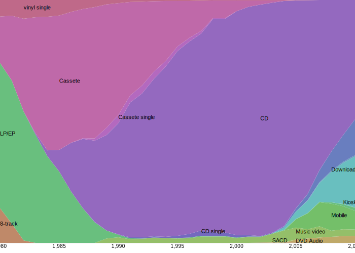
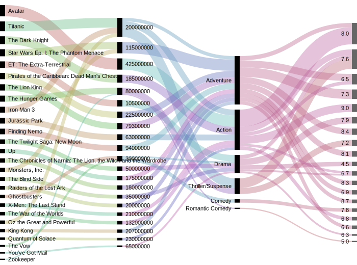
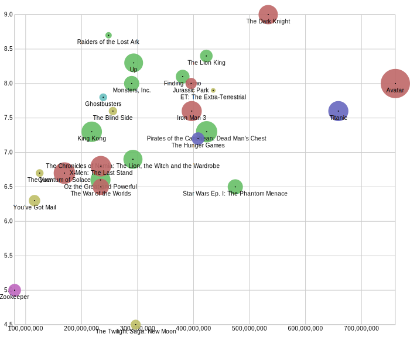

I found myself more and more into data visualization recently. So I decided to take an online course to study it more systematically. Since Coursera (my first choice) did not offer one that suits my need, I am lucky to find this course immediately on Udacity.
I believe that taking notes is a good way to participate in the course (do the assignments and disuss in the forum are better), to master the material and get back to those in need later more efficiently. Since the course is online, I’d love to put these notes on the web too, and would be happy if sharing do any help to others.
The initial notes were organized by the lectures presenting order. But then I decided to divide them into the design/concept part and the coding part, to make it easy to take what you want.
Design & Concept
This part spans mainly from lesson 1 to 3.
I spent one day (2015-2-10) finishing the videos of 1a Data Visualization, read some helpful articles and played with some examples :) Then the process got slower …
Data types:
- Quantitative: exact numbers, e.g., 0, 1, 2
- Ordered: anything that can be compared
- Categorical/nominal: anything else
According to the above definition, a quantization/histogram should be of Ordered type. But intuitively I’d like to consider it Quantitative. And what about continuous/discrete number? Well, does it really matter?
Visual encoding
The ranking of visual encodings (from more to less accurate):
- position > length > angle/slope > area > volume > color/density
I think it’s just for quantitative and ordered data. For nominal ones, it is how distinguishable that matters (leave alone themes and styles), and I recommend the below ranking:
- color hue > shape > texture > text
10 things you can learn from the New York Times’ data viz
- clarity of context and purpose
- respect for the reader
- editorial rigor and integration
- clarity of questions
- data research and preparation
- visual restraint
- layout and placement
- diversity of techniques
- technical execution
- annotation
The article from Visual.ly. To bad I can’t access to nytimes and its vizs for now. (One of the creater of D3, Mike, works for NYT is I remember right.)
Design Principles (2a)
“The data visualization is for conveying something to others.”
Choropleth = geographic + color (the fraction of Australians that identified as Anglican at the 2011 census, from wikipedia)

Cartogram = geographic + size (Germany, with the states and districts resized according to population, from wikipedia, a little bizarre though)

Pre-attentive processing: takes 200~250ms, has 4 attributes: color, movement, form, space position
Negative space

Tips for Color (more details in rules for using color)
- start with black and white (to see if color is redundant)
- use medium hues or pastels (avoid bright colors)
- use color to highlight
- respect readers (color blind)
General rules
- simple visualizations are generally better
- less is more: avoid chartjunk
- data-ink ratio as high as possible
Narrative Structures
For Traditional Journalism, it’s “data around narrative”; but now for Data Journalisim, it’s “narrative around data”. There are 3 kinds of structures:
- Author-driven: strong ordering, heavy messaging, need for clarity and speed
- Viewer-driven: ask questions, explore, tell your own data story
- Martini glass: combined, start with single path, explore different path then
Enhancements 1 - Geographic
Map data
- shapefile: binary, special software needed, storage limitations
- GeoJSON: valid JSON (can be parsed by most progamming languages), human readable, more verbose
- TopoJSON: An extension to GeoJSON that encodes topology, mainly for D3 (developed by the same anthor, will explain more in later posts)
Projection
There’s no perfect projection from 3 dimensions (the globe) to 2 dimensions (the map)
- Mercator: strech area near poles, preserve equatorial representation
Graduated Symbol Maps
A form of thematic mapping, a special case of proportional symbol maps. Also on Mike’s tutorial.
Useful links:
- Visual encoding offers the missing syllabus with sports related real examples analysis
- The chart chooser image link fails now, here’s the pdf (and there’s also a slide chooser in the latest post)
- A Tour through the Visualization Zoo
- Perceptual Edge blogs, where many lecture notes come
- Color brewer, the online tool for picking colors
- The Gestalt Principles - psychology of visual perception
- A layered grammar of graphics and plotting concept
- Other sites for good vizs (from the forum): information aesthetiecs, flowing data
Examples:
- The very impressive example in the lecture, from Gapminder, “a fact-based worldview” (and there are more on the site).
- John Snow’s Cholera Map and the story
- Lesbian, gay, bisexual and transgender rights around the world
- Remove chartjunk gif
- The OECD has interesting data about well-beings with awesome viz
- An awesome example of personal data viz – aprilzero
- Insightful interaction maps & vizs
{kind=link}
{kind=link}
P1 Raw Visualization
Since it’s a mini project for “raw” viz, I would like to try RAW, a totally no-coding online tool. I picked the Music sample data first, and visualized it with Streamgraph. Here’s what I got after some clicks and drags:

It’s both good and bad for automatic tool: you don’t need to do much, and you can’t do much (like adjusting the axes and text).
The Movies dataset contains 26 records with 5 attributes: Movie (M), Genre (G), Production Budget (B), Total Domestic Box Office (T) and Rating IMDB ®.
I finally chose the Alluvial Diagram during my first attempt. I put M -> B -> G -> R into step and T into size (by which it is sorted), that’s what it looks like:

What I wanted to tell is how the Box office “flow” w.r.t. genre, budge, and the rating is strange as it’s both cause and result. This was inspired by the slope graph in the lectures but it did not come out as expected without more advanced sorting control.
After visiting the forum, I soon realized it’s a not-so-good viz, scatter graph would be a better option with perfect-fit X, Y, Size, Color, Label attributes. My initial thought of mapping was the same as posted in the forum: X->B, Y->T, Size->R, Color->G, Label->M. But then I decided to remix it to tell a different story:

See, re-mapping X->T, Y->R, Size->B makes the whole planar the outcome of a movie – the better review and more box office it got, the higher top-right it is placed, and the size shows the effort/money invested. I would argue it’s better in some senses :)
NOTE: it is much smaller to save/embed a .svg file, and RAW allows you download the svg file directly! (How to add svg to web page?)
Critique
See bad examples on bad viz for kunk yard exercise.
Coding
This part biases to my personal programming preference, as a progammer.
The viz tools pyramid
The programming language pyramid of data visualization (from bottom to top):
- assembly: webgl, canvas, svg;
- c/c++: D3.js, of course;
- python/ruby: Dimple.js and NVD3 for charts, and Rickshaw for time series graphs, and C3.js that I have used for dynamic charts;
- Excel: chartio, RAW and Datawrapper.
UPDATE: there’s much more higher level visualization tools worth having a look, to name a few, visual.ly (full featured services) and cubism (for time-series).
10 rules for coding with D3
The article is from the course’s additional reading.
- Put each new method on its own indented line.
- If your code breaks, look for a wayward semicolon.
- The methods depend on how the operand was created.
- Create only one new element (set) per block.
- Assign each block to a logical variable.
- Assign each new element a class name identical to the block name.
- Always pass the block’s name as a class selector to the .selectAll method, even when creating an empty selection.
- Assign static or default styles using a CSS stylesheet.
- For dynamic inline style rules, use .style instead of .attr.
- Make sure the data are the correct type (Number/String/Boolean) for the operations using them.
Dimple.js
Why dimple? Built on top of D3, easy to learn, and most uniquely, exposed to D3 (return D3 object).
But I skipped the Dimple.js lectures since I want to focus on D3 and Dimple is just one of the advanced wrapper on top of D3. Maybe I will come back and re-visit Dimple later.
Chrome’s DevTools
How to use chrome’s Javascript debugger (add a debugger; line and the parsing will stop there) and print the data in a pretty way (use console.table(data) in console, the data should not be too large though) is fresh to me. And I really love Chrome :)
There’s another course about it on codeschool I’d like to try.
The magic of D3
Read throught these materials, you will get the beauty of D3.
- Thinking with joins, the basic
- How selection works, understanding from implementation
- General Update Pattern, III, animated enter-update-exit
Functions
d3.nest() is a group-then-aggregate function (like map-reduce), .key() is for grouping and .rollup() is for aggregating.
UPDATE: more on D3 in the upcoming post …
Final project
Please wait for the final project coming out :)